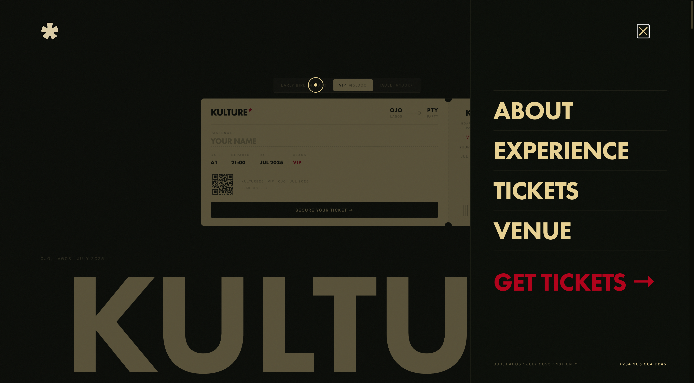
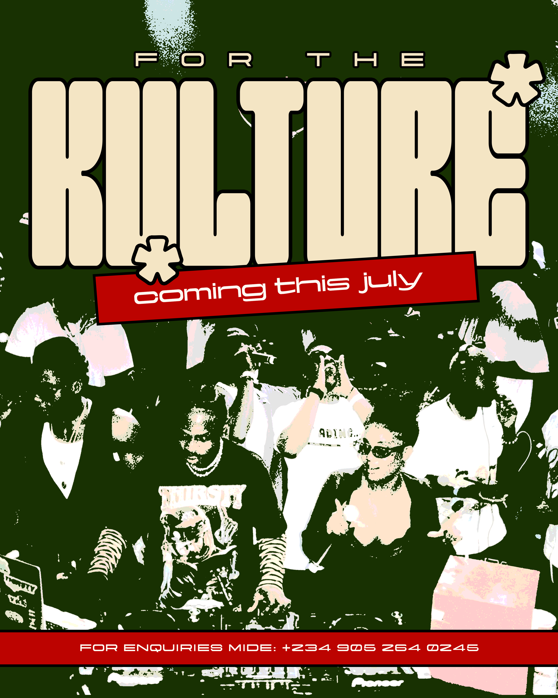

04Case Study
Brand identity and event web build for KULTURE* — a Lagos street culture party. Design system, ticket tiers, and a site engineered to convert before the early bird closes.

KULTURE* is a post-exam, one-night celebration targeting LASU students in Ojo, Lagos Mainland. The brief was dual: build a brand strong enough to make the event feel inevitable before it happened, and a site that moves people from discovery to purchase in one scroll.
Every decision — the custom display typeface, the three-tier ticket layout, the red accent used sparingly — was made to feel specifically Lagos without falling into generic streetwear tropes.
The asterisk is not decoration. It is the point.

Brand system
Three-font system — DynamicDisplay for display, Yapari for labels, Helvetica for body. Four-colour palette: black, green, cream, red. The asterisk anchors the whole identity.
Ticket architecture
Three tiers — Early Bird, VIP, Table. Designed for urgency: live countdown, blinking early-bird indicator, limited availability language baked into the layout.
Scroll narrative
Energy first (hero, marquee, flyer), then information (about, experience, venue), then conversion (tickets). The page has one job per section.
Paystack integration
Ticket cards wired to Paystack inline checkout — no redirect. Gate-ticket notice and sold-out state ready to toggle on the night.